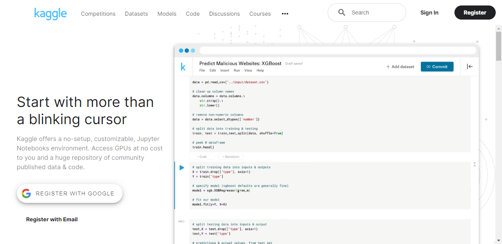

How to Obtain a Kaggle API Key
- Introduction
- Create a Kaggle Account
- Sign in to Kaggle
- Access your Kaggle Account Settings
- Generate Your Kaggle API Key
- Store the Kaggle API Key
- Conclusion
Introduction
In this tutorial, I will guide you step-by-step to obtain a Kaggle API key, which you will need to access and download datasets from Kaggle using their API. This tutorial is suitable for beginners, even those who do not have a Kaggle account yet.
Create a Kaggle Account
Visit Kaggle’s website at https://www.kaggle.com/

Click on the
Registerbutton at the top-right corner of the page.Select the
Register with your emailoption. Alternatively, you can sign up using Google, Facebook, or Yahoo accounts.
Fill in the required information, including your name, email, and password, then click
Next.
Click
I agreeto accept the Privacy and Terms agreement.
Kaggle will email a six-digit code to verify your email address. Enter the code in the prompt and click
Nextto complete your account registration.
Sign in to Kaggle
If you aren’t already signed in, click the
Sign Inbutton at the top-right corner of the Kaggle homepage.
Select the
Sign in with your emailoption. Alternatively, you can sign in using Google, Facebook, or Yahoo accounts.Enter your email/username and password, then click
Sign In.
Access your Kaggle Account Settings
Click on your profile picture at the top-right corner of the page.

In the popout menu, click the
Settingsoption.
Generate Your Kaggle API Key
Scroll to the
APIsection in your Account settings and click theCreate New API Tokenbutton.Kaggle will generate a JSON file named
kaggle.jsonand prompt you to save the file to your computer.Download the
kaggle.jsonfile and save it to a secure location on your computer. This file contains your Kaggle API key and username.
Store the Kaggle API Key
Keep the kaggle.json file safe and secure, as it contains sensitive information. Remember to set the permissions for the kaggle.json file to be readable and writable only by you. Never share this file with anyone or upload it to public repositories.
If you plan to use the Kaggle API on your local machine, ensure the kaggle.json file is in the following location:
Windows:
C:\Users\<username>\.kaggle\kaggle.jsonLinux:
~/.kaggle/kaggle.jsonmacOS:
/Users/<username>/.kaggle/kaggle.json
Conclusion
You have successfully obtained your Kaggle API key. You can now use it to download datasets from Kaggle using their API.
- Feel free to post questions or problems related to this tutorial in the comments below. I try to make time to address them on Thursdays and Fridays.
I’m Christian Mills, an Applied AI Consultant and Educator.
Whether I’m writing an in-depth tutorial or sharing detailed notes, my goal is the same: to bring clarity to complex topics and find practical, valuable insights.
If you need a strategic partner who brings this level of depth and systematic thinking to your AI project, I’m here to help. Let’s talk about de-risking your roadmap and building a real-world solution.
Start the conversation with my Quick AI Project Assessment or learn more about my approach.